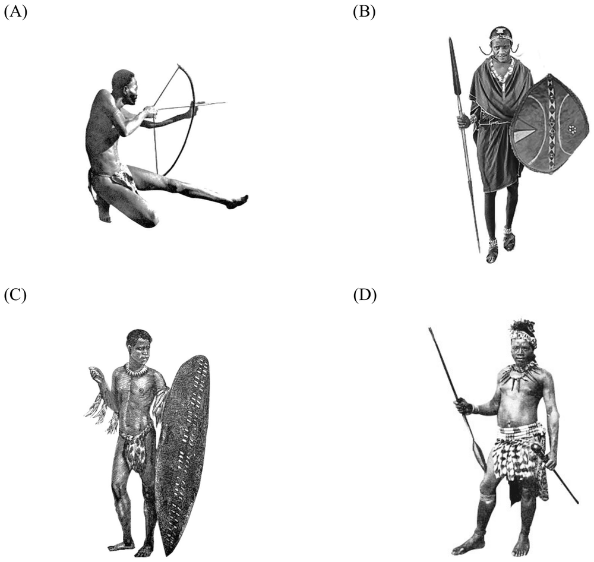

先讀文章、作答下方的題目，再展開後面的「看答案、依據句與逐段中譯」和「這一篇的生字表」。也可以到互動練習線上作答，交卷後自動批改。
第 1 段Standing proud in the savannah with their red blankets and painted shields, the Maasai people are one of the widely known symbols of East Africa. Their unique style, as remarked by Karen Blixen, author of Out of Africa, “has grown from the inside, and is an expression of the race and its history.”
第 2 段The Maasai are a semi-nomadic group in Kenya and northern Tanzania, wandering in bands and living almost entirely on the meat, blood, and milk of their herds. Over the years, the fearless tribesmen have stood strong against slavery, and resisted the urging of the Kenyan and Tanzanian governments to adopt a more modern lifestyle. In fact, they are one of the few tribes that have retained most of their traditions. Up until recently, the only way for a Maasai boy to achieve warrior status was to single-handedly kill a lion with his spear.
第 3 段Maasai clothing varies with age, gender, and place. The most recognizable piece of clothing is the shúkà, a sheet of fabric worn wrapped around the body. Red is a popular color, and women generally opt for checked, striped, or patterned pieces of cloth. Young men wear black for several months after their circumcision, a ritual signifying their coming of age. A Maasai warrior is rarely seen without his spear and shield. In Blixen’s words, “their weapons and finery are as much a part of their being as are a stag’s antlers” (a male deer’s horns).
第 4 段Beadwork is an important part of Maasai culture. Beaded jewelry is made by women, and is famous for its complexity. Natural materials such as clay, shells, and ivory were used before trading with the Europeans in the 19th century. They were then replaced by colorful glass beads, allowing for more detailed beadwork and color patterns. Multicolored beadwork is popular among both men and women. Each color holds a special meaning: White stands for peace, green for land and production, while red—the most favored color among the Maasai—is the symbol of unity and bravery.
35.Which of the following pictures best represents the image of a typical Maasai warrior?

36.What can we learn from the passage about the Maasai people?
37.Which of the following is true about Maasai clothing and beadwork?
38.Why does the author quote Blixen’s comment at the end of the third paragraph?
| 題號 | 官方答案 | 答對率 | 鑑別度 |
|---|---|---|---|
| 35 | (B) | 78% | 43 |
| 36 | (A) | 39% | 44 |
| 37 | (C) | 49% | 40 |
| 38 | (C) | 68% | 64 |
答對率與鑑別度出處：大考中心 111 學年度學科能力測驗統計圖表：英文科答對率及鑑別度表
第 3 段The most recognizable piece of clothing is the shúkà, a sheet of fabric worn wrapped around the body.
第 3 段A Maasai warrior is rarely seen without his spear and shield.
第 2 段and resisted the urging of the Kenyan and Tanzanian governments to adopt a more modern lifestyle
第 4 段Natural materials such as clay, shells, and ivory were used before trading with the Europeans in the 19th century.
第 4 段They were then replaced by colorful glass beads, allowing for more detailed beadwork and color patterns.
第 3 段A Maasai warrior is rarely seen without his spear and shield.
第 3 段In Blixen’s words, “their weapons and finery are as much a part of their being as are a stag’s antlers”
第 1 段披著紅色毯子、拿著彩繪盾牌，傲然佇立在大草原上的馬賽人，是東非廣為人知的象徵之一。《遠離非洲》的作者 Karen Blixen 曾說，馬賽人獨特的風格「是從內在長出來的，表現的是這個民族和他們的歷史」。
第 2 段馬賽人是住在肯亞和坦尚尼亞北部的半游牧民族，成群結隊四處遷徙，幾乎完全靠牲畜的肉、血和奶維生。多年來，這群無所畏懼的族人頑強抵抗奴役，也不理會肯亞和坦尚尼亞政府要他們改採較現代生活方式的勸說。事實上，馬賽人是少數保留了大部分傳統的部落之一。直到不久以前，馬賽男孩要取得戰士的身分，唯一的方法就是獨自用長矛殺死一頭獅子。
第 3 段馬賽人的服裝因年齡、性別和地區而不同。最具代表性的是 shúkà，一塊裹在身上的布。紅色很受歡迎，女性通常選擇格子、條紋或有圖案的布。年輕男子行割禮之後的幾個月穿黑色，割禮是象徵成年的儀式。馬賽戰士幾乎長矛和盾牌從不離身。用 Blixen 的話來說，「他們的武器和華麗的裝飾，就和雄鹿的角一樣，是他們身體的一部分」。
第 4 段串珠工藝是馬賽文化重要的一部分。串珠飾品由女性製作，以繁複精細聞名。19 世紀和歐洲人通商以前，用的是黏土、貝殼、象牙這些天然材料，後來改用彩色的玻璃珠，可以做出更細緻的串珠和配色圖案。男女都喜歡多色的串珠飾品。每一種顏色都有特別的意義：白色代表和平，綠色代表土地和生產，而馬賽人最喜愛的紅色，象徵團結和勇敢。
第 1 段Their unique style, as remarked by Karen Blixen, author of Out of Africa, “has grown from the inside, and is an expression of the race and its history.”
第 2 段In fact, they are one of the few tribes that have retained most of their traditions.
第 3 段Maasai clothing varies with age, gender, and place.
第 4 段Beadwork is an important part of Maasai culture.